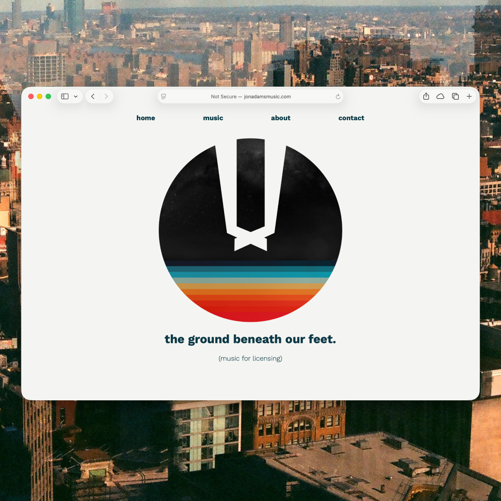

No. 05 Case study · 2018
The Ground Beneath Our Feet
A music-for-licensing site for songwriter Jon Adams — taken end to end, from research and personas to brand identity and a shipped front-end.

Overview
Making a songwriter's catalog discoverable and licensable
“The Ground Beneath Our Feet” is a home for songwriter Jon Adams's catalog — a place where music supervisors and listeners can browse his work by theme, stream it, and start a licensing conversation. I owned the project end to end: user research and personas, information architecture and flows, the brand identity, and the built, deployed front-end.
The challenge
Help the right person find the right track, fast
A licensing site lives or dies on discovery. A music supervisor arriving with a brief and a deadline needs to find a track that fits a mood in seconds; a listener or fan wants to wander and feel the work. The site had to serve both, stay out of the way of the music, and feel like the songs themselves.
Research
Designing for two audiences
I built personas to hold two distinct users in mind: the music supervisor searching on a deadline, and the listener exploring for pleasure. Their needs pull in different directions — speed and filtering versus mood and immersion — and the design had to reconcile them.
Structure
Organizing the catalog by feel, not just metadata
I mapped the core flows and structured the catalog around theme — grouping songs into mood-based, streamable playlists so a supervisor could scan by feeling and a listener could follow one. The navigation kept the music one tap away at every step.
Wireframes
Layout and hierarchy before visuals
Lo-fi wireframes let me settle structure, hierarchy, and the streaming interaction before committing to any visual language — cheap to change, fast to test.
Brand identity
An identity that feels like the ground beneath your feet
The brand had to feel grounded and human — matching the earthiness of the name and the songs. I worked through logo and identity iterations to land on a mark and type system that framed the music without competing with it.
Hi-fi design
Bringing structure and brand together
The hi-fi mockups resolved layout, brand, and interaction into the final screens — the reference I then built against.
Build
Shipping the front-end
I built and deployed the site in HTML, CSS, and JavaScript — categorized, streamable playlists with the music always within reach. Designing and building it myself kept the intent intact from wireframe to production.